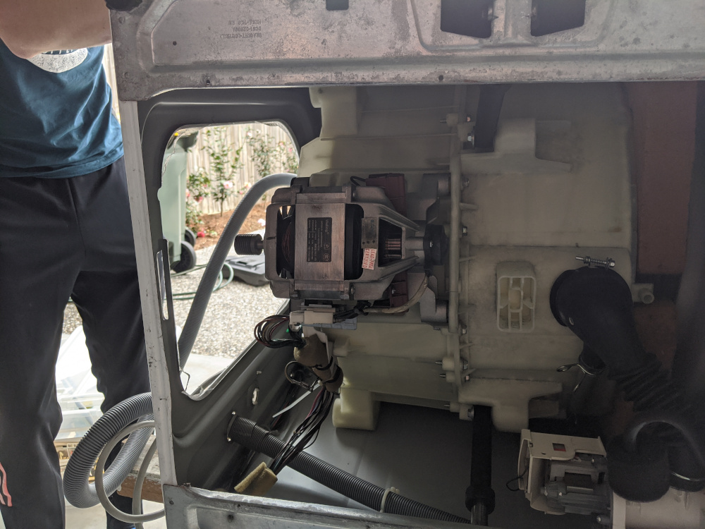

Steering System Success
Today we successfully completed a working prototype of the steering system. The system is build from a windscreen wiper motor and a strip of aluminium to mount to the steering shaft.
Currently the motor is being powered with 12V from a car battery. Both the wiper motor and the car battery were bought at a local wreckers.
This design is the third iteration of prototypes for a steering system. Initially, a servo system was trialled (see Steering System Attempt 1) but this system was too weak. We also tested using a bike sprocket attached to the shaft driven by various motors (including a washing machine motor - see below) but we still could not produce enough power to turn the kart.

Another design being worked on in parallel with the wiper motor was a 3D printed gearbox, to be driven by a smaller DC motor. This design is yet to be tested:
Now that we have electronic controls for all three major systems (brakes, throttle & steering), work will begin on designing electronics to control these systems as well as some software development.